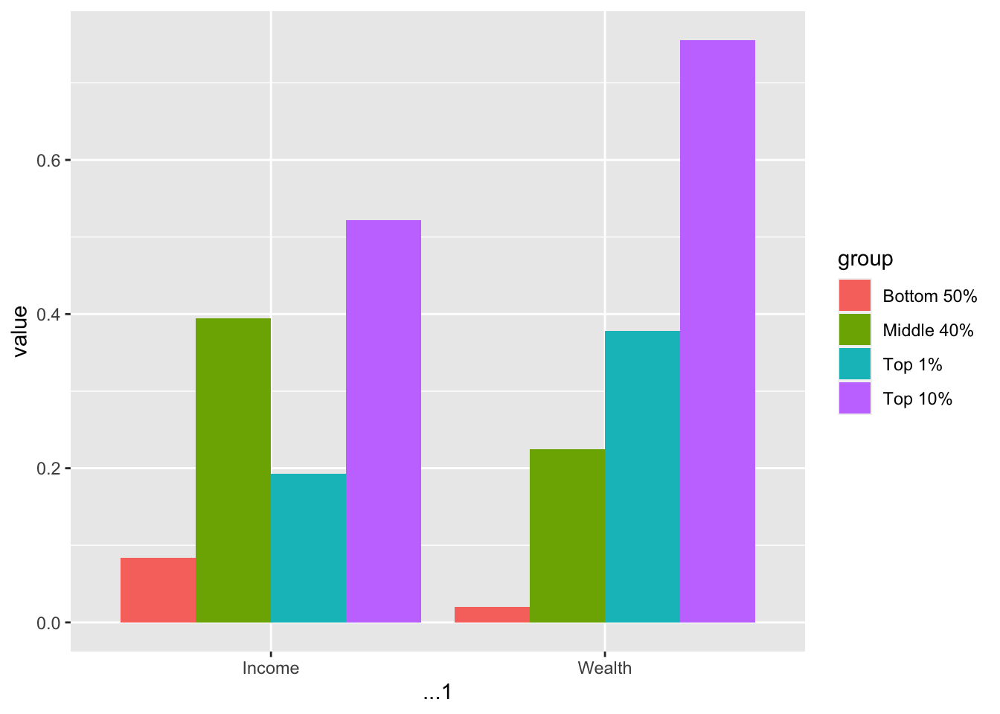
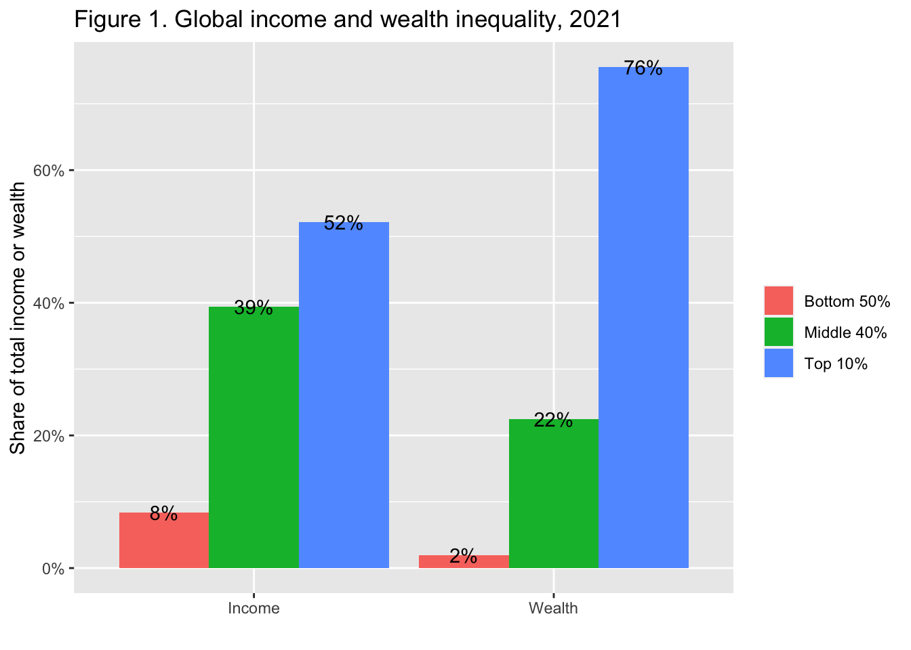
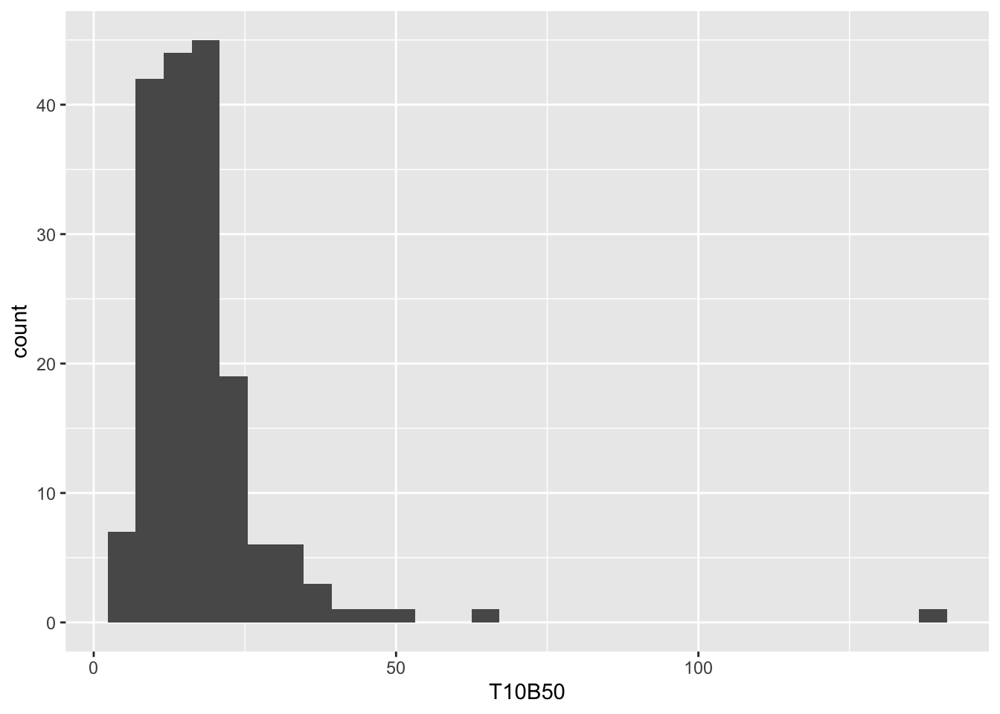
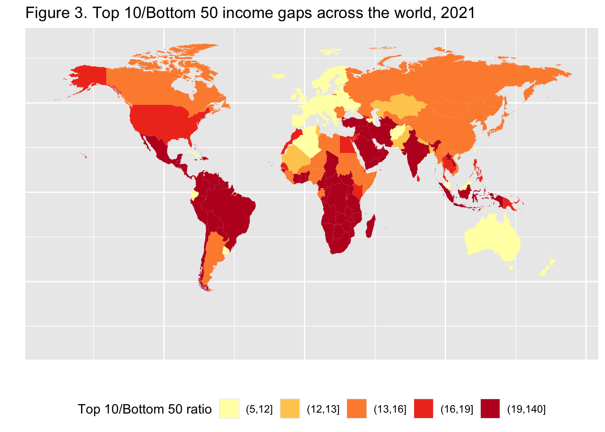
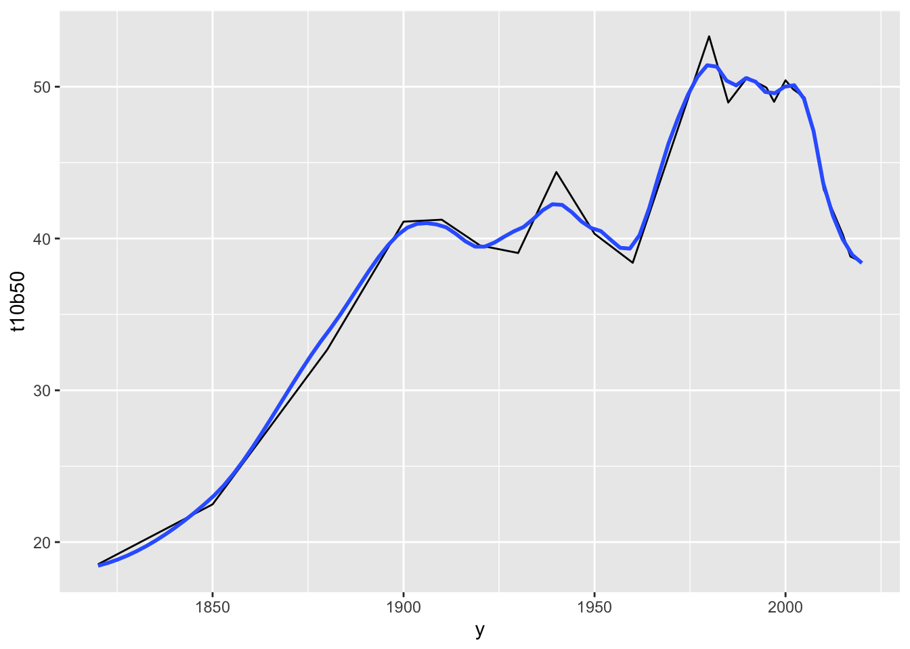
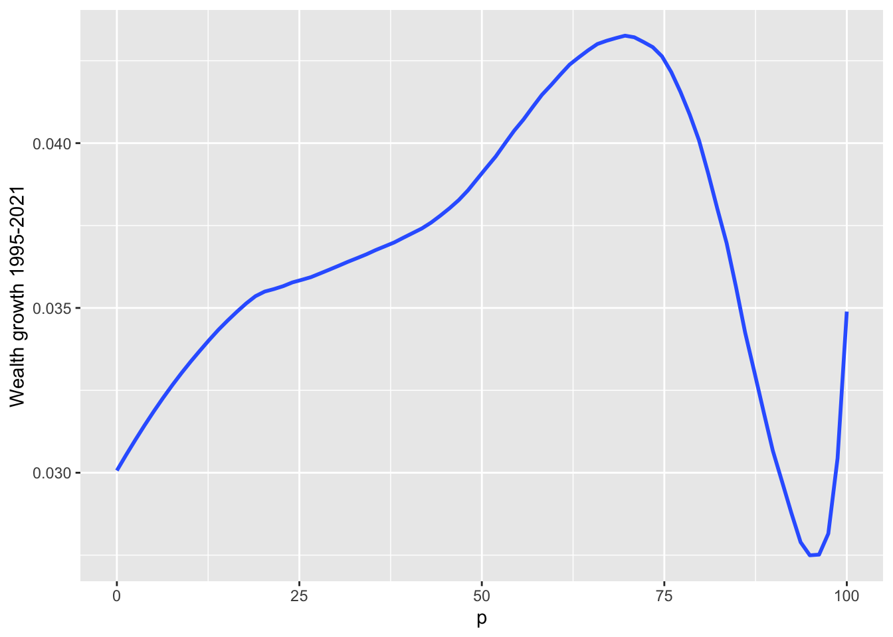

Chapter 19 Import
19.1 Setup
library(tidyverse)
#> ── Attaching core tidyverse packages ──── tidyverse 2.0.0 ──
#> ✔ dplyr 1.1.2 ✔ readr 2.1.4
#> ✔ forcats 1.0.0 ✔ stringr 1.5.0
#> ✔ ggplot2 3.4.2 ✔ tibble 3.2.1
#> ✔ lubridate 1.9.2 ✔ tidyr 1.3.0
#> ✔ purrr 1.0.1
#> ── Conflicts ────────────────────── tidyverse_conflicts() ──
#> ✖ dplyr::filter() masks stats::filter()
#> ✖ dplyr::lag() masks stats::lag()
#> ℹ Use the conflicted package (<http://conflicted.r-lib.org/>) to force all conflicts to become errors
library(readxl)
library(WDI)
library(owidR)
library(wid)19.2 EDA by R Studio: Step 3 - Importing Data
Assign a name you can recall easily when you import data. You may need to reload the data with options.
3.1. Use a package:
- WDI, wir, eurostat, etc/
- `wdi_shortname <- WDI(indicator = “indicator’s name”, … )
- Store the data and use it:
write_csv(wdi_shortname, "./data/wdi_shortname.csv") wdi_shortname <- read_csv("./data/wdi_shortname.csv")
3.2. Use readr to read from data, your data folder
df1_shortname <- read_csv("./data/file_name.csv")
3.3. Use readr to read using the url of the data
df2_shortname <- read_csv("url_of_the_data")- Store the data and use it:
write_csv(df2_shortname, "./data/df2_shortname.csv") df2_shortname <- read_csv("./data/df2_shortname.csv")
3.5. Use readxl to read Excel data. Add library(readxl) in the setup and run.
df4 <- read_excel("./data/file_name.xlsx", sheet = 1)
19.3 tidyr
We study the concept of tidy data and learn how to use the package
tidyr, especially the functionspivot_longer, and it’s conversepivot_wider. We also learn how to combine two data frames a little using functions ofdplyr.
19.4 Reviews and Previews
19.4.1 Example: World Inequility Report - WIR2022
- World Inequality Report: https://wir2022.wid.world/
- Executive Summary: https://wir2022.wid.world/executive-summary/
- Methodology: https://wir2022.wid.world/methodology/
- Data URL: https://wir2022.wid.world/www-site/uploads/2022/03/WIR2022TablesFigures-Summary.xlsx
url_summary <- "https://wir2022.wid.world/www-site/uploads/2022/03/WIR2022TablesFigures-Summary.xlsx"
download.file(url = url_summary, destfile = "./data/WIR2022s.xlsx", mode = "wb") excel_sheets("./data/WIR2022s.xlsx")
#> [1] "Index" "F1" "F2" "F3"
#> [5] "F4" "F5." "F6" "F7"
#> [9] "F8" "F9" "F10" "F11"
#> [13] "F12" "F13" "F14" "F15"
#> [17] "T1" "data-F1" "data-F2" "data-F3"
#> [21] "data-F4" "data-F5" "data-F6" "data-F7"
#> [25] "data-F8" "data-F9" "data-F10" "data-F11"
#> [29] "data-F12" "data-F13." "data-F14." "data-F15"Recall that we added mode = "wb" because Excel files are binary files, not text files such as CSV files.
When we use Excel files, we see ...1, ...2, ...3, etc., as column names. These are columns with no column names in the original Excel file, and R assigned column names automatically.
19.4.2 F1: Global income and wealth inequality, 2021
df_f1 <- read_excel("./data/WIR2022s.xlsx", sheet = "data-F1")
df_f1
#> # A tibble: 2 × 5
#> ...1 `Bottom 50%` `Middle 40%` `Top 10%` `Top 1%`
#> <chr> <dbl> <dbl> <dbl> <dbl>
#> 1 Income 0.084 0.394 0.522 0.192
#> 2 Wealth 0.0199 0.224 0.756 0.378The table above is nothing terrible; however, if we have it in the following format, we can construct a chart applying the color aesthetic mapping to the group.
#> # A tibble: 6 × 3
#> cat group value
#> <chr> <chr> <dbl>
#> 1 Income Bottom 50% 0.084
#> 2 Income Middle 40% 0.394
#> 3 Income Top 10% 0.522
#> 4 Wealth Bottom 50% 0.0199
#> 5 Wealth Middle 40% 0.224
#> 6 Wealth Top 10% 0.756We apply the pivot_longer function of the tidyr package, to transform the first table into the second.
19.5 References of tidyr
- Textbook: R for Data Science,Tidy Data
19.5.1 RStudio Primers: See References in Moodle at the bottom
- Tidy Your Data – r4ds: Wrangle, II
The first component, ‘Reshape Data’ deals with pivot_longer and pivot_wider. However, it uses an older version of these functions calls gather and spread.
19.6 Variables, values, and observations: Definitions
- A variable is a quantity, quality, or property that you can measure.
- A value is the state of a variable when you measure it. The value of a variable may change from measurement to measurement.
- An observation or case is a set of measurements made under similar conditions (you usually make all of the measurements in an observation at the same time and on the same object). An observation will contain several values, each associated with a different variable. I’ll sometimes refer to an observation as a case or data point.
- Tabular data is a table of values, each associated with a variable and an observation. Tabular data is tidy if each value is placed in its own cell, each variable in its own column, and each observation in its own row.
- So far, all of the data that you’ve seen has been tidy. In real-life, most data isn’t tidy, so we’ll come back to these ideas again in Data Wrangling.
19.7 Tidy Data
“Data comes in many formats, but R prefers just one: tidy data.” — Garrett Grolemund
Data can come in a variety of formats, but one format is easier to use in R than the others. This format is known as tidy data. A data set is tidy if:
- Each variable is in its own column
- Each observation is in its own row
- Each value is in its own cell (this follows from #1 and #2)
“Tidy data sets are all alike; but every messy data set is messy in its own way.” — Hadley Wickham
“all happy families are all alike; each unhappy family is unhappy in its own way” - Tolstoy’s Anna Karenina
19.8 tidyr Basics
Let us look at the figure in R4DS.
{kind=link}

- Each variable is in its own column
- Each observation is in its own row
19.9 Pivot data from wide to long: pivot_longer()
pivot_longer(data, cols = <columns to pivot into longer format>,
names_to = <name of the new character column>, # e.g. "group", "category", "class"
values_to = <name of the column the values of cells go to>) # e.g. "value", "n"df_f1
#> # A tibble: 2 × 5
#> ...1 `Bottom 50%` `Middle 40%` `Top 10%` `Top 1%`
#> <chr> <dbl> <dbl> <dbl> <dbl>
#> 1 Income 0.084 0.394 0.522 0.192
#> 2 Wealth 0.0199 0.224 0.756 0.378(df_f1_rev <- df_f1 %>% pivot_longer(-1, names_to = "group", values_to = "value"))
#> # A tibble: 8 × 3
#> ...1 group value
#> <chr> <chr> <dbl>
#> 1 Income Bottom 50% 0.084
#> 2 Income Middle 40% 0.394
#> 3 Income Top 10% 0.522
#> 4 Income Top 1% 0.192
#> 5 Wealth Bottom 50% 0.0199
#> 6 Wealth Middle 40% 0.224
#> 7 Wealth Top 10% 0.756
#> 8 Wealth Top 1% 0.378In the example above, -1, i.e., cols = -1 stands for all colums except the first.
Now, we can use the fill aesthetic in addition to position = "dodge". The default position is “stack”.

Let us add the value as a label, change the y-axis to percent, and add the title. The interpretation and source are from the original
df_f1_rev %>% filter(group != "Top 1%") %>%
ggplot() +
geom_col(aes(x = ...1, y = value, fill = group), position = "dodge") +
geom_text(aes(x = ...1, y = value, group = group,
label = scales::label_percent(accuracy=1)(value)),
position = position_dodge(width = 0.9)) +
scale_y_continuous(labels = scales::percent_format(accuracy = 1)) +
labs(title = "Figure 1. Global income and wealth inequality, 2021",
x = "", y = "Share of total income or wealth", fill = "")
Interpretation: The global bottom 50% captures 8.5% of total income measured at Purchasing Power Parity (PPP). The global bottom 50% owns 2% of wealth (at Purchasing Power Parity). The global top 10% owns 76% of total Household wealth and captures 52% of total income in 2021. Note that top wealth holders are not necessarily top income holders. Incomes are measured after the operation of pension and unemployment systems and before taxes and transfers.
Sources and series: wir2022.wid.world/methodology.
The next F2 is similar to F1.
19.11 Pivot data from long to wide:
pivot_wider()
In Console: vignette(“pivot”)
pivot_wider(data,
names_from = <name of the column (or columns) to get the name of the output column>,
values_from = <name of the column to get the value of the output>) #> # A tibble: 24 × 4
#> year iso group value
#> <dbl> <chr> <chr> <dbl>
#> 1 2021 Europe Bottom 50% 0.189
#> 2 2021 Europe Middle 40% 0.453
#> 3 2021 Europe Top 10% 0.358
#> 4 2021 East Asia Bottom 50% 0.139
#> 5 2021 East Asia Middle 40% 0.427
#> 6 2021 East Asia Top 10% 0.434
#> 7 2021 North America Bottom 50% 0.132
#> 8 2021 North America Middle 40% 0.411
#> 9 2021 North America Top 10% 0.457
#> 10 2021 Russia & Central Asia Bottom 50% 0.147
#> # ℹ 14 more rowspivot_wider(data, names_from = group, values_from = value) 19.12 Practice: F4 and F13
F4 and F13 are similar. Please use pivot_longer to tidy the data and create charts.
19.12.1 Done Last Week
- F12: Female share in global labor incomes, 1990-2020
- F14: Global carbon inequality, 2019. Group contribution to world emissions (%)
The next is an example of the world map.
19.13 F3: Top 10/Bottom 50 income gaps across the world, 2021
df_f3 <- read_excel("./data/WIR2022s.xlsx", sheet = "data-F3")
df_f3
#> # A tibble: 177 × 3
#> year Country T10B50
#> <dbl> <chr> <dbl>
#> 1 2021 United Arab Emirates 19.2
#> 2 2021 Afghanistan 11.7
#> 3 2021 Albania 8.99
#> 4 2021 Armenia 11.0
#> 5 2021 Angola 32.1
#> 6 2021 Argentina 13.2
#> 7 2021 Austria 7.68
#> 8 2021 Australia 10.4
#> 9 2021 Azerbaijan 9.63
#> 10 2021 Bosnia and Herzegovina 9.32
#> # ℹ 167 more rows19.14 F3: Top 10/Bottom 50 income gaps across the world, 2021 - Original

To 10 / Bottom 50 ratio has 5 classes: 5-12, 12-13, 13-16, 16-19, 19-140
Let us look at the range and distribution of the values in
T10B50.
df_f3$T10B50 %>% summary()
#> Min. 1st Qu. Median Mean 3rd Qu. Max.
#> 5.394 10.958 15.676 17.635 19.838 139.591df_f3 %>% ggplot() + geom_histogram(aes(T10B50))
#> `stat_bin()` using `bins = 30`. Pick better value with
#> `binwidth`.
df_f3 %>% arrange(desc(T10B50))
#> # A tibble: 177 × 3
#> year Country T10B50
#> <dbl> <chr> <dbl>
#> 1 2021 Oman 140.
#> 2 2021 South Africa 63.1
#> 3 2021 Namibia 49.0
#> 4 2021 Zambia 44.4
#> 5 2021 Central African Republic 42.5
#> 6 2021 Mozambique 38.9
#> 7 2021 Swaziland 38.1
#> 8 2021 Botswana 36.5
#> 9 2021 Angola 32.1
#> 10 2021 Yemen 32.0
#> # ℹ 167 more rowsUsing the information above, we set breakpoints and use R Base’s cut command to divide into five classes, and add it as a new column using mutate
df_f3 %>%
mutate(`Top 10 Bottom 50 Ratio` = cut(T10B50,breaks = c(5, 12, 13, 16, 19,140),
include.lowest = FALSE))
#> # A tibble: 177 × 4
#> year Country T10B50 Top 10 Bottom 50 Rat…¹
#> <dbl> <chr> <dbl> <fct>
#> 1 2021 United Arab Emirates 19.2 (19,140]
#> 2 2021 Afghanistan 11.7 (5,12]
#> 3 2021 Albania 8.99 (5,12]
#> 4 2021 Armenia 11.0 (5,12]
#> 5 2021 Angola 32.1 (19,140]
#> 6 2021 Argentina 13.2 (13,16]
#> 7 2021 Austria 7.68 (5,12]
#> 8 2021 Australia 10.4 (5,12]
#> 9 2021 Azerbaijan 9.63 (5,12]
#> 10 2021 Bosnia and Herzegovi… 9.32 (5,12]
#> # ℹ 167 more rows
#> # ℹ abbreviated name: ¹`Top 10 Bottom 50 Ratio`world_map <- map_data("world")
df_f3 %>% mutate(`Top 10 Bottom 50 Ratio` = cut(T10B50,breaks = c(5, 12, 13, 16, 19,140),
include.lowest = FALSE)) %>%
ggplot(aes(map_id = Country)) +
geom_map(aes(fill = `Top 10 Bottom 50 Ratio`), map = world_map) +
expand_limits(x = world_map$long, y = world_map$lat)
We observe that we have missing data from several countries. One common problem is the description of the country names varies in different data; in this case, the country names of map_data() and those of wir2022. There are several ways to edit country names. Here is one of them.
world_map_wir <- world_map
world_map_wir$region[
world_map_wir$region=="Democratic Republic of the Congo"]<-"DR Congo"
world_map_wir$region[world_map_wir$region=="Republic of Congo"]<-"Congo"
world_map_wir$region[world_map_wir$region=="Ivory Coast"]<-"Cote dIvoire"
world_map_wir$region[world_map_wir$region=="Vietnam"]<-"Viet Nam"
world_map_wir$region[world_map_wir$region=="Russia"]<-"Russian Federation"
world_map_wir$region[world_map_wir$region=="South Korea"]<-"Korea"
world_map_wir$region[world_map_wir$region=="UK"]<-"United Kingdom"
world_map_wir$region[world_map_wir$region=="Brunei"]<-"Brunei Darussalam"
world_map_wir$region[world_map_wir$region=="Laos"]<-"Lao PDR"
world_map_wir$region[world_map_wir$region=="Cote dIvoire"]<-"Cote d'Ivoire"
world_map_wir$region[world_map_wir$region=="Cape Verde"]<- "Cabo Verde"
world_map_wir$region[world_map_wir$region=="Syria"]<- "Syrian Arab Republic"
world_map_wir$region[world_map_wir$region=="Trinidad"]<- "Trinidad and Tobago"
world_map_wir$region[world_map_wir$region=="Tobago"]<- "Trinidad and Tobago"df_f3 %>% mutate(`Top 10 Bottom 50 Ratio` =
cut(T10B50, breaks = c(5, 12, 13, 16, 19,140), include.lowest = FALSE)) %>%
ggplot(aes(map_id = Country)) +
geom_map(aes(fill = `Top 10 Bottom 50 Ratio`),
map = world_map_wir) +
expand_limits(x = world_map_wir$long, y = world_map_wir$lat)
Now it is much better.
df_f3 %>% mutate(`Top 10 Bottom 50 Ratio` =
cut(T10B50,breaks = c(5, 12, 13, 16, 19,140), include.lowest = FALSE)) %>%
ggplot(aes(map_id = Country)) + geom_map(aes(fill = `Top 10 Bottom 50 Ratio`),
map = world_map_wir) + expand_limits(x = world_map_wir$long, y = world_map_wir$lat) +
coord_map("orthographic", orientation = c(25, 60, 0))
df_f3 %>% mutate(`Top 10 Bottom 50 Ratio` =
cut(T10B50,breaks = c(5, 12, 13, 16, 19,140), include.lowest = FALSE)) %>%
ggplot(aes(map_id = Country)) + geom_map(aes(fill = `Top 10 Bottom 50 Ratio`),
map = world_map_wir) + expand_limits(x = world_map_wir$long, y = world_map_wir$lat) +
coord_map("orthographic", orientation = c(15, -80, 0))
df_f3 %>% mutate(`Top 10 Bottom 50 Ratio` =
cut(T10B50,breaks = c(5, 12, 13, 16, 19,140), include.lowest = FALSE)) %>%
ggplot(aes(map_id = Country)) + geom_map(aes(fill = `Top 10 Bottom 50 Ratio`),
map = world_map_wir) +
expand_limits(x = world_map_wir$long, y = world_map_wir$lat)
Finally, change colors and change labels.
df_f3 %>%
mutate(`Top 10 Bottom 50 Ratio` =
cut(T10B50,breaks = c(5, 12, 13, 16, 19,140), include.lowest = FALSE)) %>%
ggplot(aes(map_id = Country)) +
geom_map(aes(fill = `Top 10 Bottom 50 Ratio`), map = world_map_wir) +
expand_limits(x = world_map_wir$long, y = world_map_wir$lat) +
labs(title = "Figure 3. Top 10/Bottom 50 income gaps across the world, 2021",
x = "", y = "", fill = "Top 10/Bottom 50 ratio") +
theme(legend.position="bottom",
axis.text.x=element_blank(), axis.ticks.x=element_blank(),
axis.text.y=element_blank(), axis.ticks.y=element_blank()) +
scale_fill_brewer(palette='YlOrRd')
We could not treat the data of three. We can check by using anti_join.
df_f3 %>% anti_join(world_map_wir, by = c("Country" = "region"))
#> # A tibble: 3 × 3
#> year Country T10B50
#> <dbl> <chr> <dbl>
#> 1 2021 Hong Kong 17.7
#> 2 2021 Macao 14.5
#> 3 2021 Zanzibar 19.8Filtering joins
anti_join(x,y, ...): return all rows from x without a match in y.semi_join(x,y, ...): return all rows from x with a match in y.
Check dplyr cheat sheet, and Posit Primers Tidy Data.
19.15 Remaining Charts
F5: Global income inequality: T10/B50 ratio, 1820-2020 - fit curve
F9: Average annual wealth growth rate, 1995-2021 - fit curve + alpha
F7: Global income inequality, 1820-2020 - pivot + fit curve
F10: The share of wealth owned by the global 0.1% and billionaires, 2021 - pivot + fit curve
F6: Global income inequality: Between vs. Within country inequality (Theil index), 1820-2020 - pivot + area
F11: Top 1% vs bottom 50% wealth shares in Western Europe and the US, 1910-2020 - pivot name_sep + fit curve
F8: The rise of private versus the decline of public wealth in rich countries, 1970-2020 - rename + pivot + pivot + fit curve
F15: Per capita emissions acriss the world, 2019 - add row names + dodge
We will discuss geom_smooth and stat_smooth in Chapter ?? applied to F5, F9, F7, F10.
19.16 F5: Global income inequality: T10/B50 ratio, 1820-2020
(df_f5 <- read_excel("./data/WIR2022s.xlsx", sheet = "data-F5"))
#> # A tibble: 24 × 2
#> y t10b50
#> <dbl> <dbl>
#> 1 1820 18.5
#> 2 1850 22.5
#> 3 1880 32.7
#> 4 1900 41.1
#> 5 1910 41.2
#> 6 1920 39.5
#> 7 1930 39.0
#> 8 1940 44.4
#> 9 1950 40.3
#> 10 1960 38.4
#> # ℹ 14 more rowsdf_f5 %>% ggplot(aes(x = y, y = t10b50)) + geom_line() + geom_smooth(span=0.25, se=FALSE)
#> `geom_smooth()` using method = 'loess' and formula = 'y ~
#> x'
19.17 F9: Average annual wealth growth rate, 1995-2021 - fit curve + alpha
df_f9 <- read_excel("./data/WIR2022s.xlsx", sheet = "data-F9"); df_f9
#> # A tibble: 127 × 2
#> p `Wealth growth 1995-2021`
#> <dbl> <dbl>
#> 1 0 0.0310
#> 2 1 0.0310
#> 3 2 0.0310
#> 4 3 0.0310
#> 5 4 0.0310
#> 6 5 0.0310
#> 7 6 0.0312
#> 8 7 0.0317
#> 9 8 0.0322
#> 10 9 0.0328
#> # ℹ 117 more rowsdf_f9 %>%
ggplot(aes(x = p, y = `Wealth growth 1995-2021`)) + geom_smooth(span = 0.30, se = FALSE)
#> `geom_smooth()` using method = 'loess' and formula = 'y ~
#> x'
19.18 F7: Global income inequality, 1820-2020 - pivot + fit curve
df_f7 <- read_excel("./data/WIR2022s.xlsx", sheet = "data-F7"); df_f7
#> # A tibble: 24 × 4
#> y `Bottom 50%` `Middle 40%` `Top 10%`
#> <dbl> <dbl> <dbl> <dbl>
#> 1 1820 0.136 0.361 0.503
#> 2 1850 0.118 0.350 0.532
#> 3 1880 0.0870 0.345 0.568
#> 4 1900 0.0724 0.332 0.595
#> 5 1910 0.0729 0.326 0.601
#> 6 1920 0.0755 0.328 0.597
#> 7 1930 0.0714 0.371 0.558
#> 8 1940 0.0629 0.379 0.558
#> 9 1950 0.0687 0.377 0.554
#> 10 1960 0.0701 0.392 0.538
#> # ℹ 14 more rows19.20 F6: Global income inequality: Between vs. Within country inequality (Theil index), 1820-2020 - pivot + area
df_f6 <- read_excel("./data/WIR2022s.xlsx", sheet = "data-F6"); df_f6
#> New names:
#> • `` -> `...1`
#> # A tibble: 9 × 3
#> ...1 `Between-country inequality` Within-country inequa…¹
#> <dbl> <dbl> <dbl>
#> 1 1820 0.120 0.880
#> 2 1850 0.166 0.834
#> 3 1880 0.241 0.759
#> 4 1900 0.257 0.743
#> 5 1920 0.320 0.680
#> 6 1950 0.439 0.561
#> 7 1980 0.569 0.431
#> 8 2000 0.473 0.527
#> 9 2020 0.320 0.680
#> # ℹ abbreviated name: ¹`Within-country inequality`df_f6 %>% select(year = "...1", 2:3) %>%
pivot_longer(cols = 2:3, names_to = "type", values_to = "value") %>%
mutate(types = factor(type,
levels = c("Within-country inequality", "Between-country inequality"))) %>%
ggplot(aes(x = year, y = value, fill = types)) +
geom_area() +
scale_y_continuous(labels = scales::percent_format(accuracy = 1)) +
scale_x_continuous(breaks = round(seq(1820, 2020, by = 20),1)) +
scale_fill_manual(values=rev(scales::hue_pal()(2)),
labels = function(x) str_wrap(x, width = 15)) +
labs(title = "Figure 6. Global income inequality:
\nBetween vs. within country inequality (Theil index), 1820-2020",
x = "", y = "Share of global inequality (% of total Theil index)", fill = "") +
annotate("text", x = 1850, y = 0.28,
label = stringr::str_wrap("1820: Between country inequality represents 11%
of global inequality", width = 20), size = 3) +
annotate("text", x = 1980, y = 0.70,
label = stringr::str_wrap("1980: Between country inequality represents 57%
of global inequality", width = 20), size = 3) +
annotate("text", x = 1990, y = 0.30,
label = stringr::str_wrap("2020: Between country inequality represents 32%
of global inequality", width = 20), size = 3)19.22 F8: The rise of private versus the decline of public wealth in rich countries, 1970-2020 - rename + pivot + pivot + fit curve
df_f8 <- read_excel("./data/WIR2022s.xlsx", sheet = "data-F8"); df_f8
#> # A tibble: 51 × 17
#> year Germany `Germany (private)` Spain `Spain (private)`
#> <dbl> <dbl> <dbl> <dbl> <dbl>
#> 1 1970 1.11 2.30 0.604 4.06
#> 2 1971 1.12 2.25 0.657 4.53
#> 3 1972 1.11 2.27 0.624 4.36
#> 4 1973 1.11 2.23 0.596 4.46
#> 5 1974 1.13 2.25 0.586 4.64
#> 6 1975 1.12 2.35 0.602 4.83
#> 7 1976 1.03 2.34 0.581 4.46
#> 8 1977 1.01 2.42 0.586 4.10
#> 9 1978 0.990 2.52 0.604 4.10
#> 10 1979 0.989 2.55 0.621 4.20
#> # ℹ 41 more rows
#> # ℹ 12 more variables: France <dbl>,
#> # `France (private)` <dbl>, UK <dbl>,
#> # `UK (private)` <dbl>, Japan <dbl>,
#> # `Japan (private)` <dbl>, Norway <dbl>,
#> # `Norway (private)` <dbl>, USA <dbl>,
#> # `USA (private)` <dbl>, gwealAVGRICH <dbl>, …df_f8 %>%
select(year, Germany_public = Germany, Germany_private = 'Germany (private)',
Spain_public = Spain, Spain_private = 'Spain (private)',
France_public = France, France_private = 'France (private)',
UK_public = UK, UK_private = 'UK (private)',
Japan_public = Japan, Japan_private = 'Japan (private)',
Norway_public = Norway, Norway_private = 'Norway (private)',
USA_public = USA, USA_private = 'USA (private)') %>%
pivot_longer(!year, names_to = c("country",".value"), names_sep = "_") %>%
pivot_longer(3:4, names_to = "type", values_to = "value") %>%
ggplot() +
stat_smooth(aes(x = year, y = value, color = country, linetype = type),
span = 0.25, se = FALSE, size=0.75) +
scale_y_continuous(labels = scales::percent_format(accuracy = 1)) +
labs(title = "Figure 8. The rise of private versus the decline of public
wealth in rich countries, 1970-2020",
x = "", y = "wealth as as % of national income", color = "", type = "")19.22.1 Step 1
df_f8 %>%
select(year, Germany_public = Germany, Germany_private = 'Germany (private)',
Spain_public = Spain, Spain_private = 'Spain (private)',
France_public = France, France_private = 'France (private)',
UK_public = UK, UK_private = 'UK (private)',
Japan_public = Japan, Japan_private = 'Japan (private)',
Norway_public = Norway, Norway_private = 'Norway (private)',
USA_public = USA, USA_private = 'USA (private)') #> # A tibble: 51 × 15
#> year Germany_public Germany_private Spain_public
#> <dbl> <dbl> <dbl> <dbl>
#> 1 1970 1.11 2.30 0.604
#> 2 1971 1.12 2.25 0.657
#> 3 1972 1.11 2.27 0.624
#> 4 1973 1.11 2.23 0.596
#> 5 1974 1.13 2.25 0.586
#> 6 1975 1.12 2.35 0.602
#> 7 1976 1.03 2.34 0.581
#> 8 1977 1.01 2.42 0.586
#> 9 1978 0.990 2.52 0.604
#> 10 1979 0.989 2.55 0.621
#> # ℹ 41 more rows
#> # ℹ 11 more variables: Spain_private <dbl>,
#> # France_public <dbl>, France_private <dbl>,
#> # UK_public <dbl>, UK_private <dbl>, Japan_public <dbl>,
#> # Japan_private <dbl>, Norway_public <dbl>,
#> # Norway_private <dbl>, USA_public <dbl>,
#> # USA_private <dbl>19.22.2 Step 2.
df_f8 %>%
select(year, Germany_public = Germany, Germany_private = 'Germany (private)',
Spain_public = Spain, Spain_private = 'Spain (private)',
France_public = France, France_private = 'France (private)',
UK_public = UK, UK_private = 'UK (private)',
Japan_public = Japan, Japan_private = 'Japan (private)',
Norway_public = Norway, Norway_private = 'Norway (private)',
USA_public = USA, USA_private = 'USA (private)') %>%
pivot_longer(!year, names_to = c("country",".value"), names_sep = "_") #> # A tibble: 357 × 4
#> year country public private
#> <dbl> <chr> <dbl> <dbl>
#> 1 1970 Germany 1.11 2.30
#> 2 1970 Spain 0.604 4.06
#> 3 1970 France 0.422 3.12
#> 4 1970 UK 0.601 2.85
#> 5 1970 Japan 0.719 3.09
#> 6 1970 Norway NA NA
#> 7 1970 USA 0.364 3.26
#> 8 1971 Germany 1.12 2.25
#> 9 1971 Spain 0.657 4.53
#> 10 1971 France 0.443 3.06
#> # ℹ 347 more rows19.22.3 Step 3.
df_f8 %>%
select(year, Germany_public = Germany, Germany_private = 'Germany (private)',
Spain_public = Spain, Spain_private = 'Spain (private)',
France_public = France, France_private = 'France (private)',
UK_public = UK, UK_private = 'UK (private)',
Japan_public = Japan, Japan_private = 'Japan (private)',
Norway_public = Norway, Norway_private = 'Norway (private)',
USA_public = USA, USA_private = 'USA (private)') %>%
pivot_longer(!year, names_to = c("country",".value"), names_sep = "_") %>%
pivot_longer(3:4, names_to = "type", values_to = "value")#> # A tibble: 714 × 4
#> year country type value
#> <dbl> <chr> <chr> <dbl>
#> 1 1970 Germany public 1.11
#> 2 1970 Germany private 2.30
#> 3 1970 Spain public 0.604
#> 4 1970 Spain private 4.06
#> 5 1970 France public 0.422
#> 6 1970 France private 3.12
#> 7 1970 UK public 0.601
#> 8 1970 UK private 2.85
#> 9 1970 Japan public 0.719
#> 10 1970 Japan private 3.09
#> # ℹ 704 more rows19.22.4 Step 3. Final Step
df_f8 %>%
select(year, Germany_public = Germany, Germany_private = 'Germany (private)',
Spain_public = Spain, Spain_private = 'Spain (private)',
France_public = France, France_private = 'France (private)',
UK_public = UK, UK_private = 'UK (private)',
Japan_public = Japan, Japan_private = 'Japan (private)',
Norway_public = Norway, Norway_private = 'Norway (private)',
USA_public = USA, USA_private = 'USA (private)') %>%
pivot_longer(!year, names_to = c("country",".value"), names_sep = "_") %>%
pivot_longer(3:4, names_to = "type", values_to = "value") %>%
ggplot() +
stat_smooth(aes(x = year, y = value, color = country, linetype = type),
formula = y~x, method = "loess", span = 0.25, se = FALSE, size=0.75) +
scale_y_continuous(labels = scales::percent_format(accuracy = 1)) +
labs(title = "Figure 8. The rise of private versus the decline of public wealth
\nin rich countries, 1970-2020",
x = "", y = "wealth as as % of national income", color = "", type = "")
19.23 F15: Per capita emissions acriss the world, 2019 - add row names + dodge
df_f15 <- read_excel("./data/WIR2022s.xlsx", sheet = "data-F15"); df_f15
#> # A tibble: 24 × 4
#> regionWID group tcap mark
#> <chr> <chr> <dbl> <dbl>
#> 1 East Asia Bottom 50% 3.12 1
#> 2 <NA> Middle 40% 7.91 1
#> 3 <NA> Top 10% 38.9 1
#> 4 Europe Bottom 50% 5.09 2
#> 5 <NA> Middle 40% 10.6 2
#> 6 <NA> Top 10% 29.2 2
#> 7 North America Bottom 50% 9.67 3
#> 8 <NA> Middle 40% 21.7 3
#> 9 <NA> Top 10% 73.0 3
#> 10 South & South-East Asia Bottom 50% 1.04 4
#> # ℹ 14 more rowsdf_f15 %>% mutate(region = rep(regionWID[!is.na(regionWID)], each = 3)) %>%
select(region, group, tcap) %>%
ggplot(aes(x = region, y = tcap, fill = group)) +
geom_col(position = "dodge") +
scale_x_discrete(labels = function(x) stringr::str_wrap(x, width = 10)) +
labs(title = "Figure 15 Per capita emissions across the world, 2019",
x = "", y = "tonnes of CO2e per person per year", fill = "")
Review one by one, referring to the following.
References: https://ds-sl.github.io/data-analysis/wir2022.nb.html